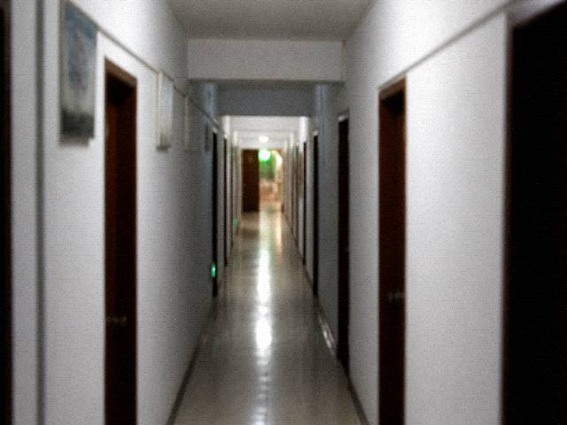

The Tourism window works daytime hours. After NightPlay CurtainUp the window closes. Closed, WuChuang's session is still there. The session does not change status.
The troupe phone does not take refunds from outside. Outside calls are for buyouts only. A buyout is not a package.
Cultural Center QiaoGan clocks out at 17:00. After hours, IncenseAccount is not viewed on site. View the transcript.
The Teahouse has nobody on duty. It is a mirror.
Emergencies, call the town clinic. The clinic does not handle tickets. Does not handle DutyBook. Does not handle CurtainUp.
Contact us. The sheet taped on the glass in daytime. Taken down at night. Taken down, the page still hangs. Number hanging does not mean anybody picks up. Nobody picking up still has to be written. Written as follows.
Tourism window works daytime hours. After NightPlay CurtainUp the window closes. Closed, WuChuang's session is still there. Session does not change status. Changing status needs troupe roll-call. Roll-call this window cannot see. Troupe phone does not take refunds from outside. Outside calls are for buyouts only. A buyout is not a package. Buyout needs ChengShi present. ChengShi is in the west wing. West wing is not open to the public. Cultural Center QiaoGan clocks out at 17:00. After hours, IncenseAccount is not viewed on site. View the transcript. Transcript viewing needs an appointment. Appointment goes through Cultural Center switchboard. Extension is on the slip on the office door. Slip bleeds in rain. Bleeds, call again the next day. Teahouse has nobody on duty. Mirror only. Mod is in Guangzhou. The worksite number does not talk site desk. Emergencies, call the town clinic. Clinic is fifty steps north of the Flagstone Street mouth. Nurse on duty until 21:00. After 21:00 knock. Knock and see if she is in. In, she handles fever, falls, rat bites. Does not handle tickets. Does not handle DutyBook. Does not handle CurtainUp. Station ticket office also closes after 16:40. Closed, ask a van. Vans take cash. Bring your own cash. Brought cash, do not phone to ask why the window has nobody. Nobody because it is closed. Closed lights are really closed. Really closed, come tomorrow. Tomorrow the button may still be grey. Grey, do not call again and again. Again and again, WuChuang does not reply. No reply is the rule. Sheet on the glass is a printout. Print date 2014-03. After March the number has not changed. Not changed does not mean anybody picks up at night. Nobody at night. Nobody's lights are really closed.